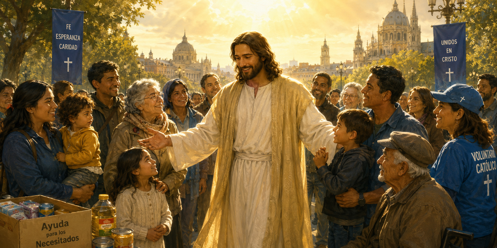
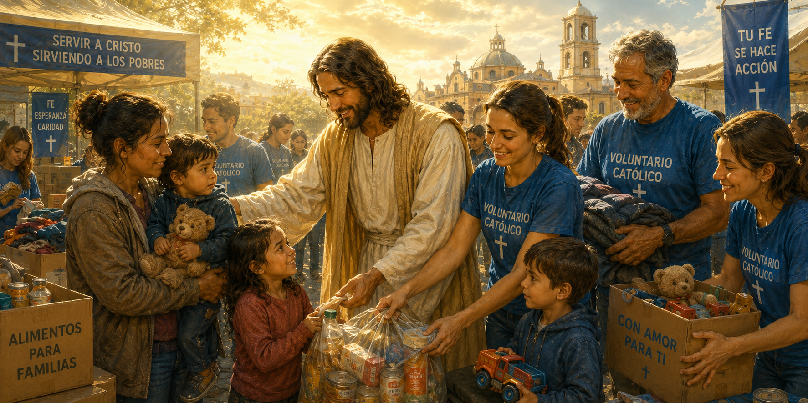

Misión y Visión
Una comunidad nacida de la fe, el amor y el deseo de servir.
Cómo empezó todo
Jesús y María en Acción nació como respuesta a un llamado que Dios fue sembrando poco a poco en el corazón de varios miembros de la comunidad hispanohablante de Hamburgo.
Después de los años de la pandemia, surgió la necesidad de fortalecer los lazos de fraternidad, acompañar a las familias más vulnerables y crear espacios de encuentro, integración y ayuda mutua.
Lo que comenzó como una pequeña iniciativa de solidaridad hacia familias refugiadas se transformó, gracias a la providencia de Dios y al compromiso de numerosos voluntarios, en un proyecto de servicio que continúa creciendo.

Nuestra Misión
“Jesús y María en Acción” es el grupo de acción social de la Comunidad Católica Hispanohablante de Hamburgo.
Promovemos iniciativas de solidaridad, acompañamiento humano y articulación de ayuda básica para las personas más vulnerables de Hamburgo.
Como pequeña comunidad, multiplicamos nuestro impacto a través del voluntariado y la fe en acción.

Nuestra Visión
Consolidarnos como un grupo católico, organizado, sostenible en el tiempo y reconocido de manera oficial en la Comunidad Católica de Hamburgo.
Buscamos generar un impacto positivo en la vida de las personas vulnerables, ayudándolas a desarrollarse y crecer espiritualmente.
Promovemos la integración, la solidaridad y el compromiso cristiano como camino de crecimiento comunitario y espiritual.
Valores y Virtudes del Grupo
Fe puesta en acción
Creemos que cada acto de amor, por pequeño que parezca, tiene el poder de transformar vidas y acercarnos más a Dios.
Quiero servir